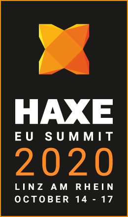

Haxe Summit 2020 Keynote
After the long-awaited Haxe 4.0.0 release in 2019, the year 2020 offers exciting new opportunities and challenges for Haxe. In this talk, Simon will give an overview of how Haxe and the Haxe Foundation are doing.
Expect to hear about:
- New features that will make your Haxe life even better
- Improvements to Haxe and related technologies that you didn't even know you wanted
- Bugfixes that reaffirm the solid foundation Haxe is built on
- The state of the Haxe Foundation and its commitment to all things Haxe
- And much more!
Presented by: